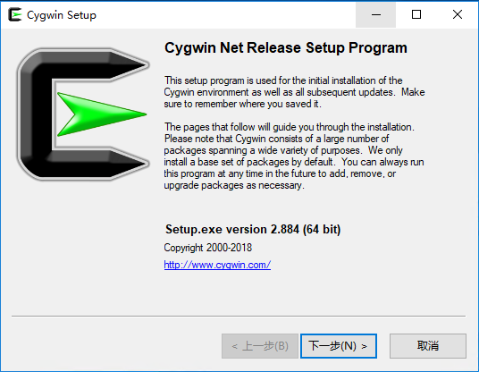
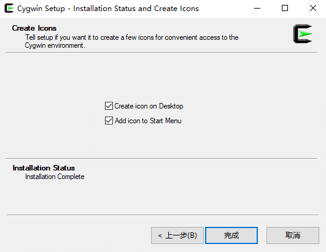
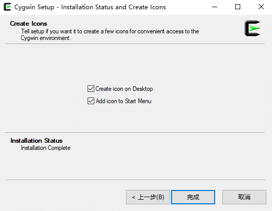

2.3. linux推送到window¶
在看这个文章的时候，请确保你看完了 rsync入门。
这个文章的主要讲解如何使用rsync来把window的是文件同步到linux上去。
2.3.1. 环境介绍¶
- 2个机器
- centos7(192.168.1.109)，windows10(192.168.1.104)
- centos(/app/web)===>window(c:appweb)
我们要完成的功能是centos7的数据更新后，自动推送到window机器上面。
这里我们选择windows作为服务端，centos7作为客户端，然后centos7去监控本地数据推送给window数据。
2.3.2. 服务端的配置¶
2.3.2.1. 下载cygwin¶
windows下是没有rync的， 需要安装软件来提供rsync功能的。
我们下载 cygwin64.exe , 详细的地址可以访问 cywin官网
安装步骤截图：



 



安装完毕cygwin之后，其实就是一个linux环境， 剩下的工作和linux和linux同步基本没有太大区别了。
2.3.3. 编辑rsyncd的配置文件¶
rsyncd的配置文件在“C:cygwin64etcrsyncd.conf”(需要自己创建conf文件)
使用记事本编辑这个conf文件
uid = test
gid = None
user chroot = no
max connections = 200
timeout = 600
pid file = /var/run/rsyncd.pid
lock file = /var/run/rsyncd.lock
log file = /var/run/rsyncd.log
[web]
path = /cygdriver/c/app/web/
ignore errors
read only = no
list = no
hosts allow = 192.168.1.0/24
auth users = web
secrets file = /etc/rsyncd.pass
Note
我的uid是test，你的根据你的情况进行修改，如果不知道可以打开cygwin64Terminal终端，输入 echo $USER查看。
2.3.3.1. 创建服务器密码文件¶
上面指定了密码文件位置为/etc/rsync.pass，我们需要创建这个文件。
web:web
使用cygwin64Terminal修改这个密码文件的权限为600。

2.3.3.2. 启动rsync服务¶
# 使用cygwin64Terminal 去启动rsync的服务进程
rsync --daemon
psaux aux |grep rsync

2.3.4. 客户端配置¶
2.3.4.1. 安装rsync软件¶
查看是否安装
[root@localhost web ]$ rpm -ql rsync
[root@localhost web]$ yum -y install rsync
2.3.4.2. 先验证下服务端是否可以访问¶
[root@localhost web]# telnet 192.168.1.104 873
Trying 192.168.1.104...
Connected to 192.168.1.104.
Escape character is '^]'.
@RSYNCD: 31.0
出现了RSYNC的字样说明服务端的rsync服务是开启的了。
2.3.4.3. 创建同步密码文件¶
由于我们的服务端有密码配置，客户端需要密码才能同步我们服务端的数据，且ip在服务端的运行范围内。
密码文件格式： passwd
[root@centos66 ~]$ (umask 066; echo "web" > /etc/rsync.pass)
[root@centos66 ~]$ cat /etc/rsync.pass
web
[root@centos66 ~]$ ll /etc/rsync.pass
-rw------- 1 root root 4 Dec 26 08:23 /etc/rsync.pass
Note
这里我们只需要指定密码即可，不用用户名。
2.3.4.4. 初步测试同步¶
[root@localhost web]# rsync -avz web@192.168.1.104::web --password-file=/etc/rsync.pass /app/web
receiving incremental file list
file has vanished: "/proc" (in web)
file has vanished: "/cygdrive/c" (in web)
./
新建 RTF 文档.rtf
cygdrive/
dev/
sent 124 bytes received 598 bytes 131.27 bytes/sec
total size is 7 speedup is 0.01
rsync warning: some files vanished before they could be transferred (code 24) at main.c(1518) [generator=3.0.9]
[root@localhost web]# ll
total 4
dr-xr-xr-x. 2 197609 197121 6 Jan 14 10:24 cygdrive
dr-xr-xr-x. 2 197609 197121 238 Jan 14 10:24 dev
-rwxrwx---. 1 197609 197121 0 Jan 14 09:41 test.txt
Note
这里我不知道为何也罢cygdrive和dev这个目录同步过来了。 不知道为啥的.
2.3.5. 写脚本完成自动拉取服务器数据¶
安装inotify-tool工具
[root@centos66 yum.repos.d]$ yum install inotify-tools
编写rsync脚本
#!/bin/bash
user=web
remote_module=web
local_dir=/app/web/
ip=192.168.1.104
password_file=/etc/rsync.pass
/usr/bin/inotifywait -mrq --timefmt '%d/%m/%y%H:%M' --format '%T %w %f' -e modify,delete,create,attrib $local_dir | while read DATE TIME DIR FILE;do
filechange=${DIR}${FILE}
# 拉取服务器数据
#/usr/bin/rsync -avz --delete --progress --password-file=$password_file $user@$ip::$remote_module $local_dir &
# 推送本机的数据
/usr/bin/rsync -avz --delete --progress --password-file=$password_file $local_dir $user@$ip::$remote_module &
date_str=/var/log/rsync_$(date "+%F").log
echo "At ${TIME} on ${DATE}, file $filechange was backed up via rsynce" >> $date_str 2>&1
done
2.3.6. 配置计划任务¶
将上面的脚本放到while true里面即可，或者修改脚本为sysv脚本。